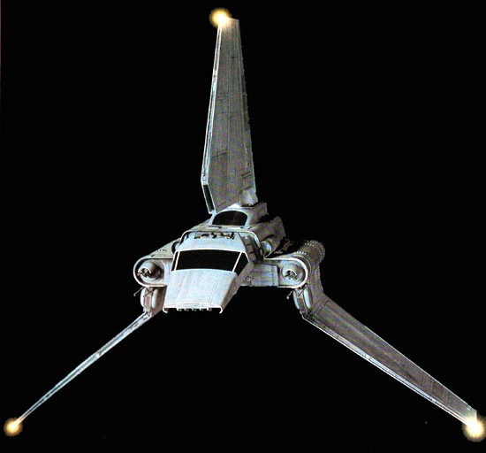
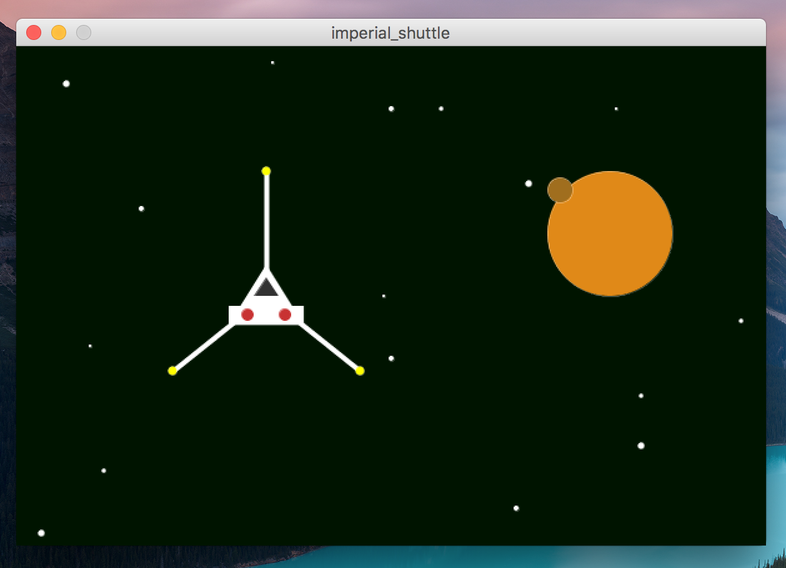

This assignment should be written in the processing programming language. You should only use processing features that we have discussed up to this point. If you have questions about whether or not a particular feature can/should be used, ask the instructors! You may use any processing version 3.0 or newer.
Your program file should have a header comment at the top that has the following format:
//
// Author: Student Name
// Description:
// A short description of what this program does!
//
If any part of your scripts are particularly complex, comment it!
In this assignment, you will write a processing program that generates a drawing of an imperial shuttle flying through space. As you may already know, the imperial shuttle is an iconic spaceship from the original star-wars trilogy. Below is a image.

You will write a program in processing that draws a picture of this spaceship flying through space. Your program should generate a window that looks very similar to below:

This rendered image must have the following characteristics:
Ultimately, the image does not have to be pixel-for-pixel identical to the example. You may take some creative liberty, but it must be similar and fulfill all of the above requirements.
You should name your code file shuttle.pde.
This was assigned on 8/25/2017. It is due on 9/1/2017 at 5:00pm.
Turn in each of the files described in the spec (1 total) the the assignment 2 dropbox in D2L before the due date. Make sure to name the files exactly as this document specifies. In general, make sure to follow these instructions precicely. If you don’t, we will deduct points!!!